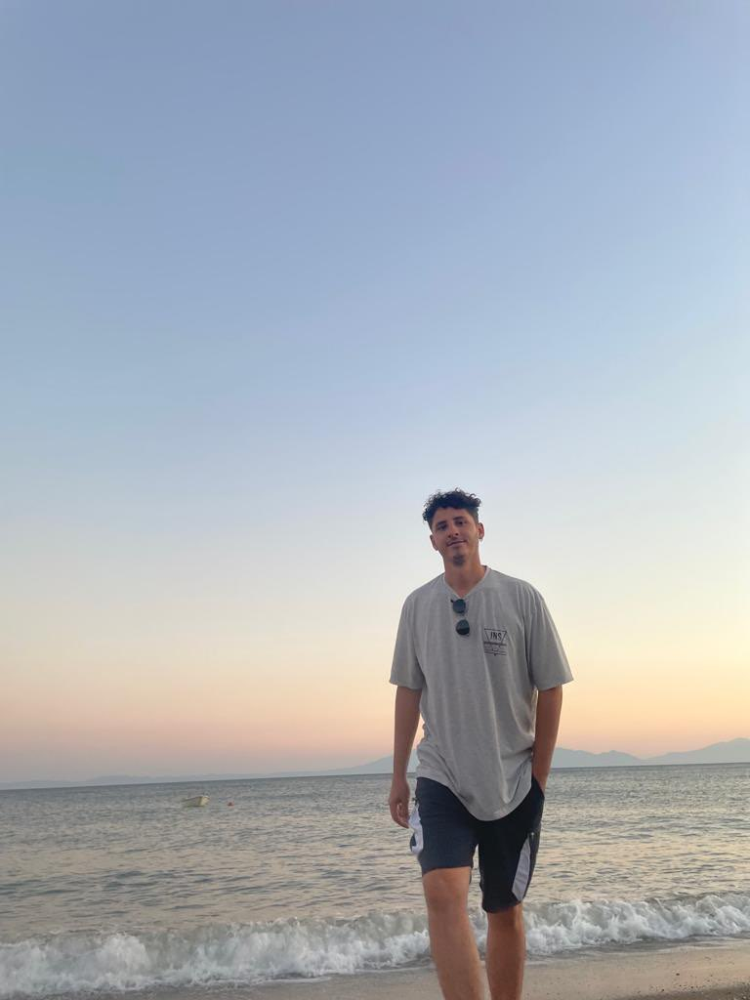

Berkay Çongal
24 Yaşindayim
Mehmet Baydar Anadolu lisesinde okudum Üniversite psikolojiyi bırakmak zorunda kaldım daha sonra yazılım ile taniştim
İstanbul Avcılarda yaşıyorum yazılıma her zaman heves duyuyordum bakıyordum hiçbir zaman gercekleştirmiceğim bir hayal gibiydi
Bir gün olacağını biliyordum sonunda hayallerime kavustum ve bu yola girdim frontend olarak başlamak istedim görsel ve üretken biriyim
bir seyleri yapmak onları üretmek olusturmakdan cok keyif alıyorum o yüzden bu yolda ilerliyorum
AcunMedya Akademide FrontEnd olarak Egitim alıyorum
Hobilerim
Paten sürmek , Basket oynamak Extreme sporlara ilgim cok fazla, Oyun oynamak ve flim izlemek vb